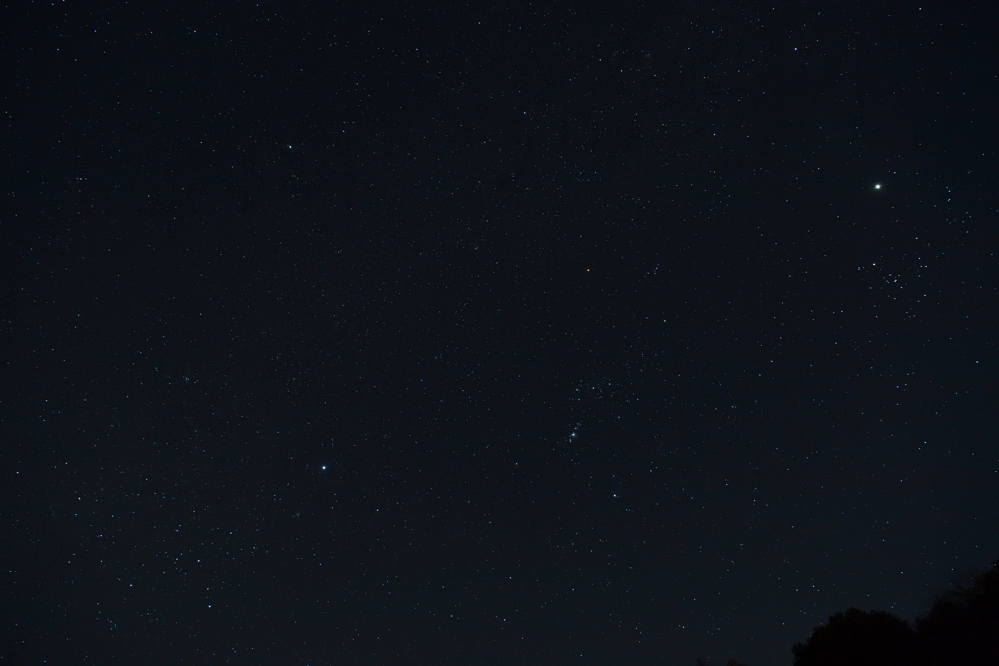

しぶんぎ座流星群撮影に挑戦
2025年1月4日、しぶんぎ座流星群撮影に挑戦しました。
当日の予報は「AM 3:00 前後にわずかに晴れ間が出る」となっていて、
実際には AM 2:30 - AM 3:00 の30分の晴れ間でいくつかの流れ星が見えた程度でした。
次へをクリックすると画像が表示されます
写真はAM 2:00 ごろに撮影した冬の大三角と木星です。

流星群は小惑星や彗星のかけら?
戻る